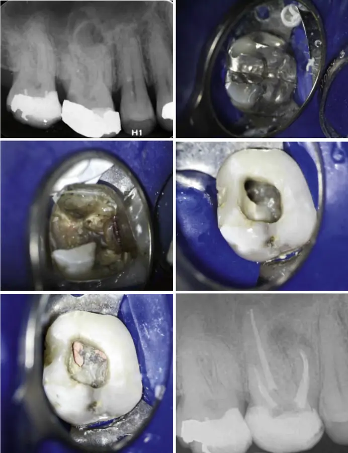

نسخه استخراجشده؛ ترجمه یا تأیید علمی انجام نشده است. وضعیت: captured
مولر اول بالا پس از برداشتن ترمیم قدیمی و پوسیدگی، دیوارههای مزیال و دیستالش را از دست داده و فقط دیوارههای کوتاه باکال و پالاتال مانده است. هیچ کلمپی هر چهار نقطهاش روی دندان نمینشیند. پیش از درمان ریشه چه میکنی؟

وقتی بخش زیادی از ساختار دندان از دست رفته، اول دندان را بازسازی کن تا ایزولاسیون درست ممکن شود. این بازسازی پس از برداشتن ترمیم قدیمی و پیش از شروع درمان ریشه انجام میشود، با گلاسآینومر یا کامپوزیت.
وقتی ساختار از دست رفته ولی دندان هنوز برای نگه داشتن ماده گیر کافی دارد، سه ماده به کار میآید:
هر سه سیل تاجی کافی میدهند و تا ترمیم نهایی پایدار میمانند. مواد باندشونده سیل بهتر، استحکام بیشتر و زیبایی بهتری از IRM دارند.
دیوارههای بازسازیشده به کلمپ جای گیر میدهند و سیل تاج را تا ترمیم نهایی نگه میدارند. بعد از بازسازی، کلمپ را مثل هر دندان دیگر انتخاب کن و تست پایداری را فراموش نکن.
وقتی برجستگی طبیعی تاج از دست رفته، روی سطح فاسیال و لینگوال ساختار باقیمانده رزین باند کن و کلمپ را اپیکال به آندرکات رزین بگذار. پس از درمان، رزین راحت برداشته میشود. این روش بر تراشیدن شیار افقی در فاسیال و لینگوال برای نوکهای کلمپ برتری دارد، چون تهاجم کمتری دارد.
در دندان ترکخورده یا شکسته، باند ارتودنسی تا ترمیم نهایی از دندان محافظت و پشتیبانی میکند. باند را سمان کن و ساختار از دست رفته را با IRM جایگزین کن. هنگام گذاشتن باند، کانالها و اتاقک پالپ را محافظت کن.
روکش موقت دید را کم میکند، نشانههای آناتومیک را میپوشاند و ممکن است جهت حفرهی دسترسی را عوض کند؛ کلمپ هم اغلب آن را جابهجا میکند. پس معمولاً پیش از درمان ریشه برداشته میشود.
اشتباه رایج: تراشیدن شیار برای نوکهای کلمپ در دندانی که همین حالا ساختار کمی دارد. برجستگی رزینی همان گیر را بدون برداشتن بافت سالم میدهد.